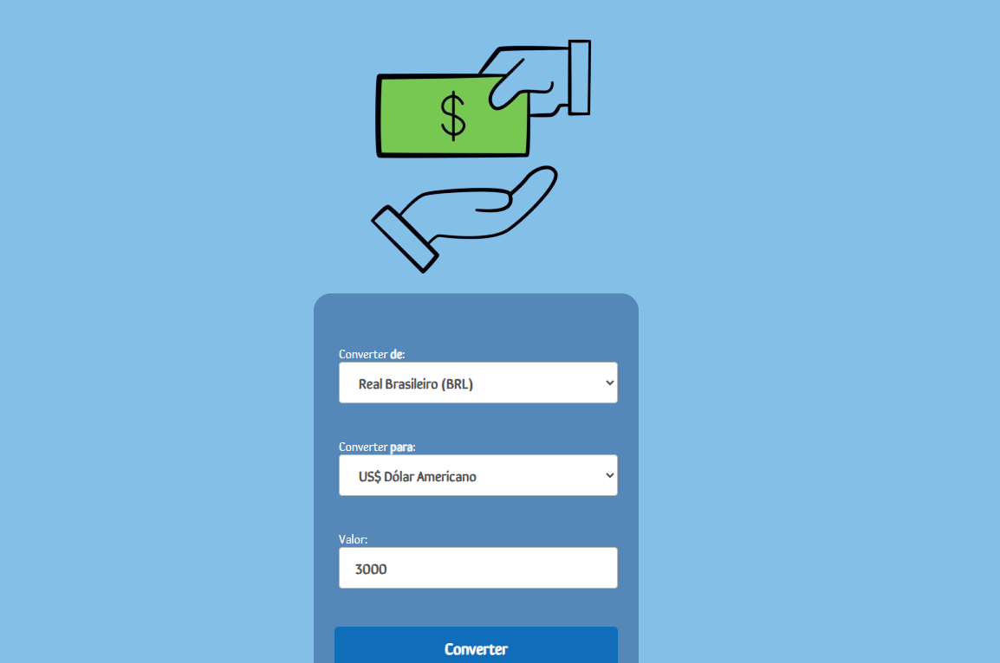
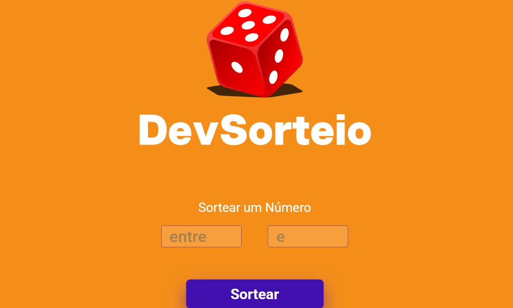

Projetos

Conversor de Moedas
Aplicação que converte moedas em tempo real.
HTML
CSS
JavaScript

DevSorteio
Sistema de sorteio utilizando método random.
HTML
CSS
JavaScript

Jokenpo
Jogo clássico Pedra, Papel e Tesoura.
HTML
CSS
JavaScript